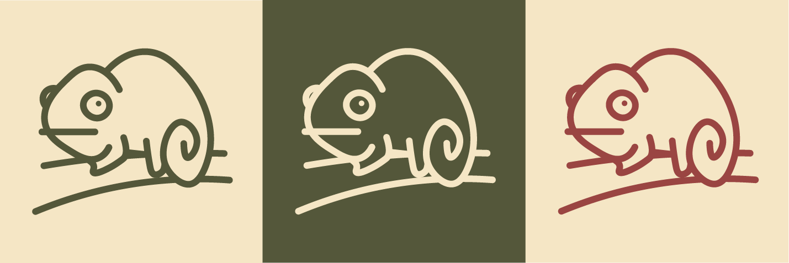

Im Rahmen eines einwöchigen Design-Sprints bestand die Aufgabe darin, ein Konzept zu entwickeln, das auf einem ikonischen Aspekt der Natur basiert und diesen in der Stadt Groningen erlebbar macht. Dabei ging es nicht darum, ein bestehendes Problem mit einem vorgegebenen Produkt zu lösen. Stattdessen sollten wir ausgehend von einem Naturphänomen eine eigene Idee entwickeln und diese innerhalb kurzer Zeit von der ersten Recherche und Ideation bis zu einem funktionierenden Konzept und ersten Prototypen bringen.
Zu Beginn sammelten und untersuchten wir verschiedene natürliche Phänomene und überlegten, wie diese auf Groningen übertragen werden könnten. Unsere erste Ideation reichte von Licht und Schatten über Wetter und Blumen bis hin zu den Nordlichtern. Wir entwickelten unterschiedliche Ansätze und diskutierten, welche davon genügend Potenzial für eine Umsetzung im städtischen Raum boten. Nach mehreren Iterationen entschieden wir uns als Gruppe für Camouflage. Die Verbindung zur Stadt entstand aus der Beobachtung, dass wir unsere alltägliche Umgebung irgendwann kaum noch bewusst wahrnehmen. Orte und Details, die eigentlich interessant oder schön sind, werden zu einem selbstverständlichen Teil des Stadtbildes. Daraus entstand die Leitidee: „Hidden in Plain Sight“ Wie können wir etwas, das direkt vor unseren Augen liegt, wieder interessant und entdeckenswert machen?
Wir übertrugen das Prinzip der Tarnung auf den urbanen Raum. Anstatt Camouflage lediglich als visuelles Stilmittel zu verwenden, wollten wir daraus eine Interaktion mit der Stadt entwickeln. Vertraute Orte sollten zu etwas werden, das man wieder aktiv sucht und entdeckt. Aus dieser Überlegung entstand die Idee einer spielerischen Treasure Hunt durch Groningen. Versteckte Tierfiguren werden in der Stadt platziert und über eine App auf einer Karte verortet. Wer eine Figur findet, erhält zusätzliche Informationen über den jeweiligen Ort. Damit wurde aus einem Naturphänomen ein konkretes Stadterlebnis.
Nachdem die Richtung feststand, begannen wir, das Konzept visuell und interaktiv greifbar zu machen. Dazu entwickelten wir: eine visuelle Identität ein Logo eine Farbpalette eine Karte von Groningen erste App-Screens 3D-Tierfiguren
Auch die visuelle Identität entwickelte sich aus dem Thema Camouflage. Für das Logo untersuchten wir zunächst unterschiedliche Tiere, die für ihre Tarnfähigkeit bekannt sind. Neben dem Mimik-Oktopus wurde insbesondere das Chamäleon untersucht. Letztendlich entschieden wir uns für das Chamäleon als unmittelbar verständliches Symbol für Tarnung. Die Farbpalette verbindet natürliche Grün- und Brauntöne mit Rot- und Orangetönen, die an die Backsteinarchitektur Groningens erinnern. Darauf aufbauend entstanden verschiedene Logo- und Gestaltungsexplorationen.


.png)
.png)